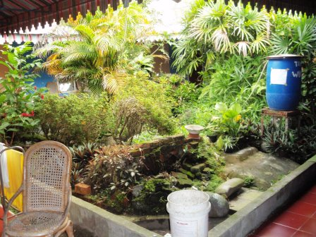
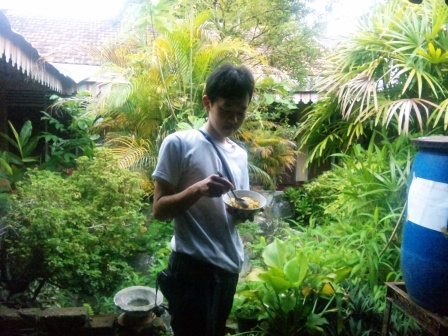
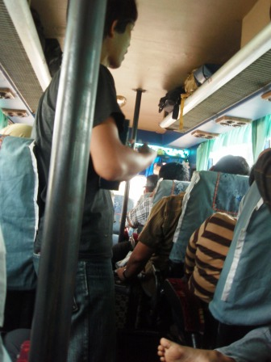
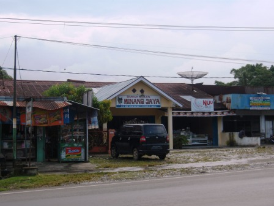
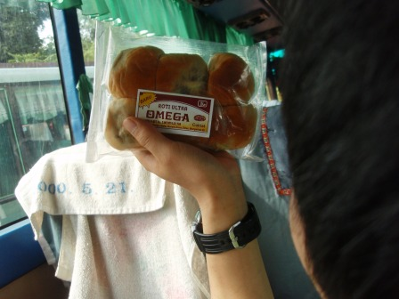
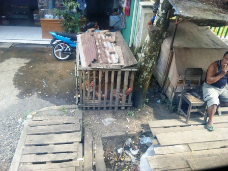

12日目～長距離バスで目指すはブキティンギ！～


朝6時半ごろに宿の人が戸を叩く音で起きた。ここは朝ごはん(インスタントミーゴレンとコーヒーのセット)もつくのだ。昨晩はエキストラベッドも持ってきてくれたし、安い割にはサービス満点だった。中庭を見ながら朝食を食べ、チェックアウト後は速やかにブキティンギまで行くバスを探さねばならなかった。ここ3日間は移動はしているのにちっともブキティンギには近づいていなかった。ブキティンギというのは赤道のやく50km南にある風光明媚な観光名所で、近くで催行されているジャングルトレッキングツアーに参加することがスマトラを旅する第一の目的だった。

バスターミナルのようなところまでいってブキティンギのバスはないかと尋ねると、あるということだった。少し高かったので妥当と思える値段まで値切った。ただ、そのチケット売り場の雰囲気が怪しかったのですぐにはお金は払わず、そのバスを見せてくれたら払うというと了解してくれた。しばらくターミナルで待っていると軽ワゴンが来て乗れと言う。どうやら、バスに乗るのはここではなく少し離れた所にあるバスロケットのようだ。一時間半ほど待つ間、ついてきてくれたチケット売り場のおじさんと談笑を楽しんだ。歌が好きな人で、携帯電話で徳永英明の曲を流して歌ってくれた。バスはエアコンは効いていたものの、明らかにビップクラスではなく、パレンバンからメダンに向かう超長距離バスだった。時々止まっては売り子が乗ってきて食べ物を売っていた。また、バスの中は大音量で音楽が流れていた。


いくつもの街を過ぎていく。酔うので読書はできず、お菓子等を食べて時間をつぶした。

分かりにくいが、木製の小屋に詰め込まれているのはチキンたち。100％、食べられる運命にあるのは間違いない。
夜も遅くなって寝ていると、深夜0時前に突然ＫＥＮから起こされ、もう降りるよと言われた。ブキティンギへの到着予定は翌日の朝だったし、辺りを見回してもブキティンギだとは思えない。寝ぼけていたので相当混乱した。安いバスだったのでここで放置か！とも思われたが、一緒に降りた近くの人に聞くとなんとここで乗り換えると言うのだ。しばらく道路沿いで待っていると確かにバスは来た。それに乗り込み、再びブキティンギへ。
翌日へ